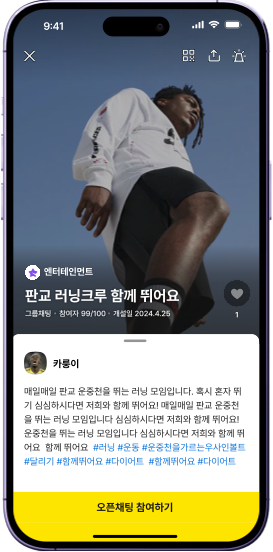
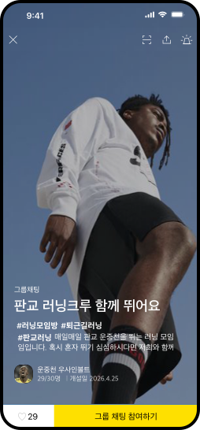
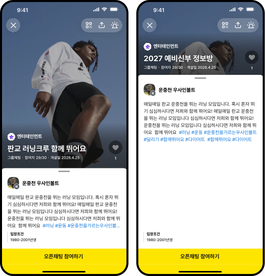
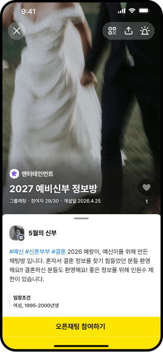
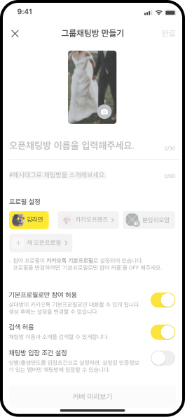
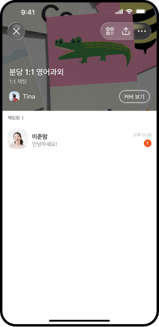

오픈채팅 탭 오픈 이후 커버 진입은 크게 증가했지만, 채팅방 참여율은 저조했습니다. 채팅방에 대한 중요 정보에 대해 가독성이 낮아 인지 어려움을 중점으로 두고, 오픈채팅 커버와 오픈채팅 만들기 디자인 개편을 진행했습니다.
오픈채팅 커버
개편에 있어, 주제 기능이 추가되었습니다. 추후 주제에 따른 오픈채팅 확장성을 고려해, 정보 중에서도 주제를 가장 높은 하이라키로 잡고, 그 외의 정보들을 하위 하이라키로 배치했습니다. 또한 바텀시트를 통해 향후 소개 뿐만이 아닌, 커뮤니티 정보가 많아져도 이를 포용할 수 있도록 고려했습니다.
ASIS

TOBE




그룹채팅 만들기
만들기의 경우, 큰 변화보다는 서비스가 만들어져가면서 추가되었던 UI 타입을 정돈 한다는 점을 중점으로 두었습니다. 특히 기존에 오픈프로필로 참여하고 싶다는 CS에 대한 문제가 프로필 설정의 그룹화와 하이라키가 잘못되었다고 생각되어, 기본 프로필 설정 토글 버튼을 최상위 하이라키로 바꾸었습니다.
ASIS

TOBE


1:1 오픈채팅 방

